嘉賓 . 作品
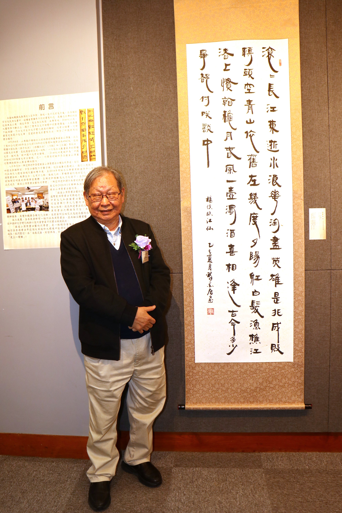
馮萬如先生 作品:楊慎《臨江仙》
釋文 : 滾滾長江東逝水，浪花淘盡英雄。是非成敗轉頭空。青山依舊在，幾度夕陽紅。白髮漁樵江渚上，慣看秋月春風。一壺濁酒喜相逢。古今多少事，都付笑談中。
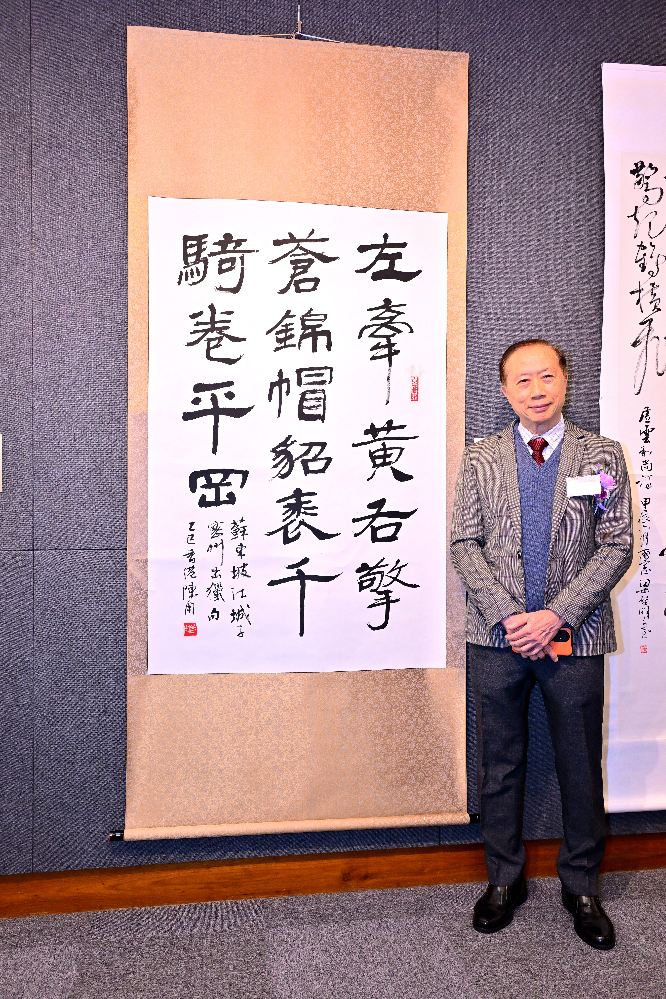
陳用博士 作品:蘇東坡《江城子·密州出獵句》
釋文 : 左牽黃，右擎蒼，錦帽貂裘，千騎卷平岡。
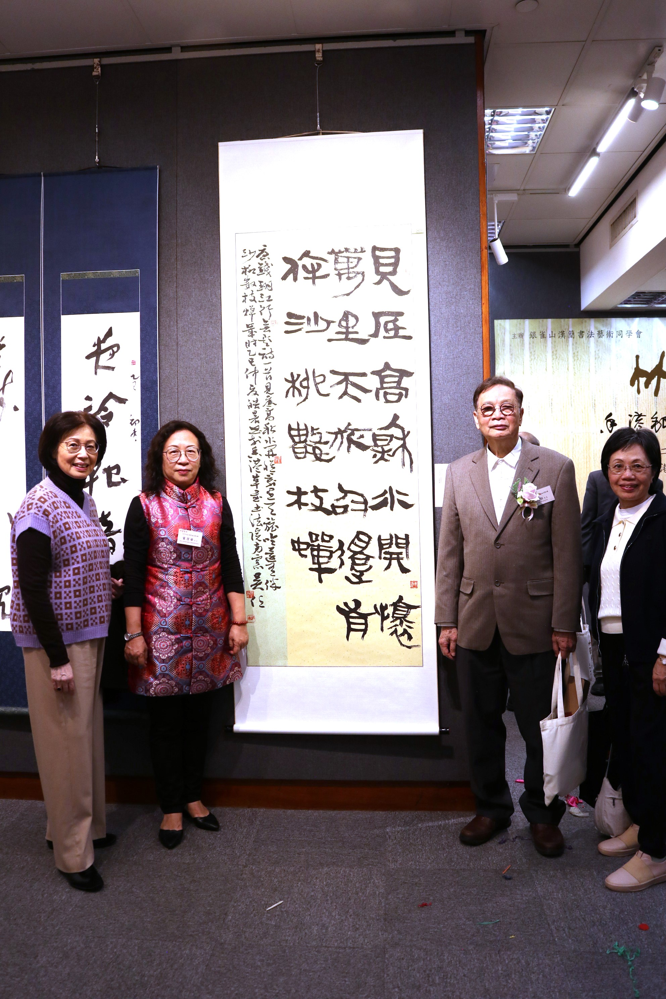
吳任先生 作品:錢珝詩《江行無題》
釋文 : 見底高秋水，開懷萬里天。旅吟還有伴，沙柳數枝蟬。
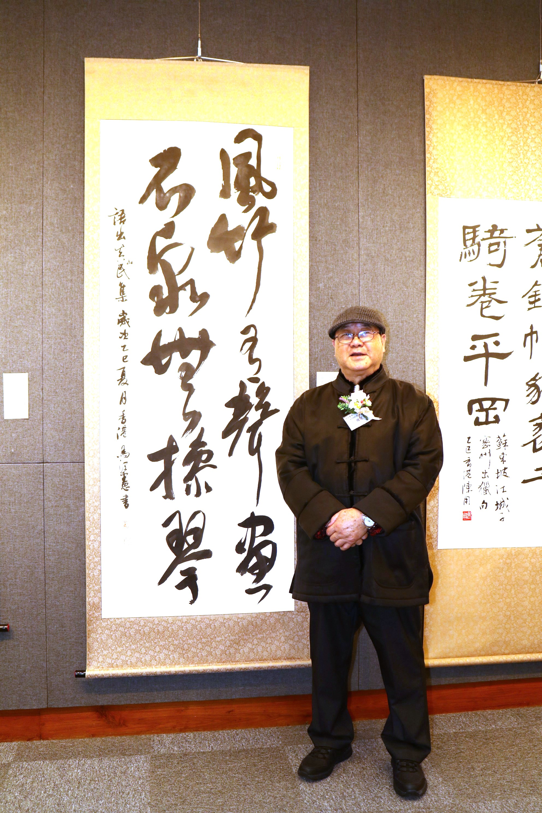
馬潤憲先生 作品:語出 《真山民集》
釋文 : 風竹有聲畫 石泉無操琴
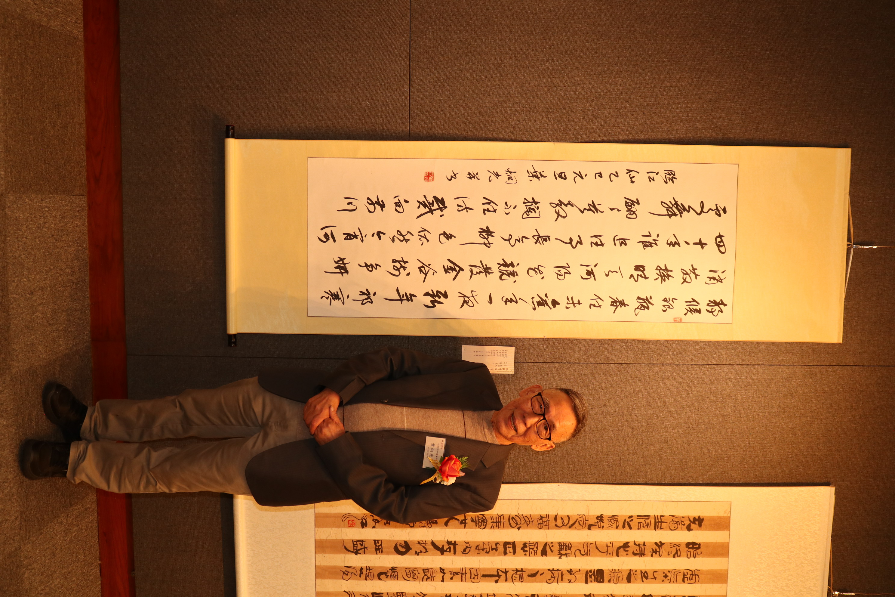
葉炯光先生 作品:自撰詞《臨江仙》
釋文 : 靜候銀瓶春住未，舊年一夜新年。祁寒消散換晴天。河楊花競發，金谷樹爭妍。四十年誰追往事，長亭柳色依然，今宵何處舞翩翩。莫教攔不住，訪戴向前川。
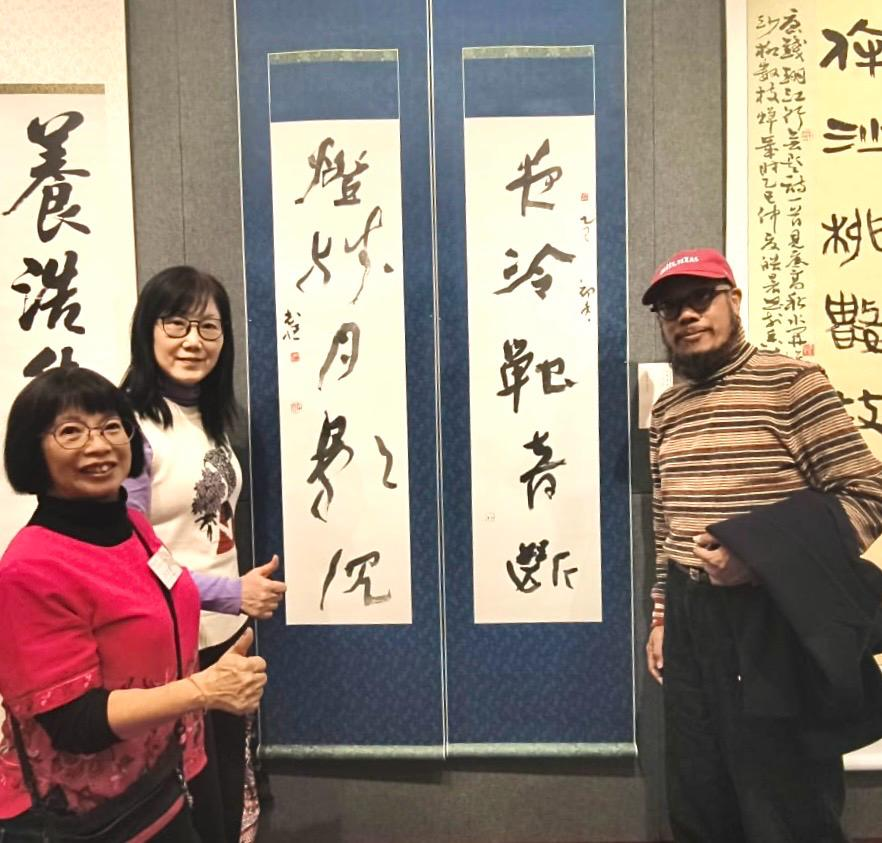
陳志恆先生
作品:自撰聯
釋文 :夜冷蟬音斷 燈殘月影沉
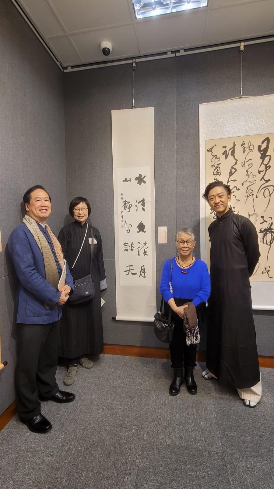
廖鳳嬌女士 作品:對聯
釋文 : 水清魚讀月 山靜鳥談天
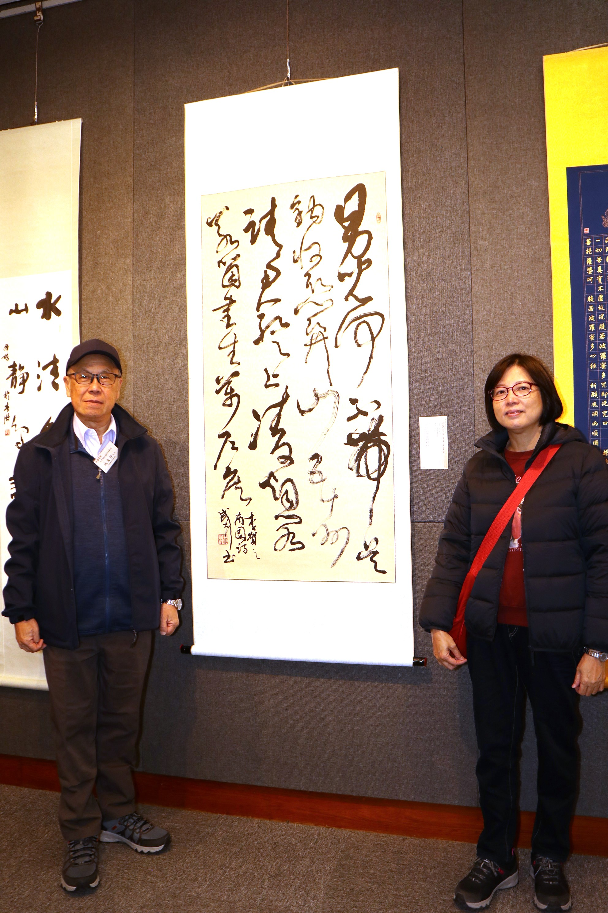
成大行先生 作品:李賀《南園詩》
釋文： 男兒何不帶吳鉤，收取關山五十州。請君暫上凌煙閣，若個書生萬戶侯？
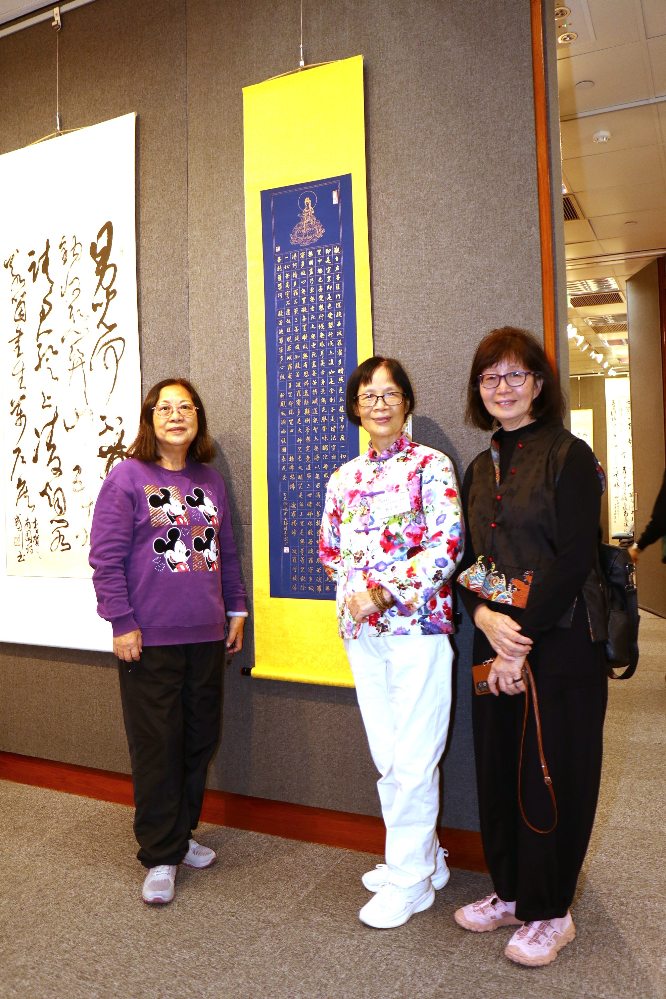
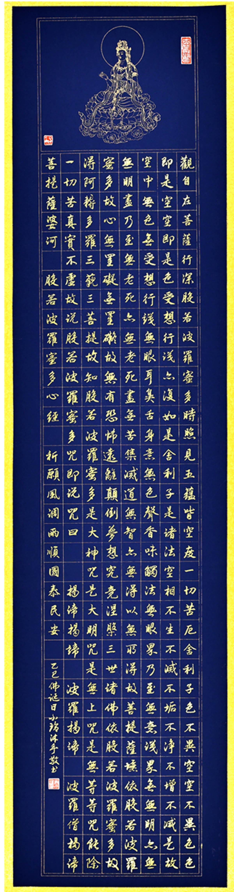
吳小玲女士 作品:《心經》
釋文：觀自在菩薩，行深般若波羅蜜多時，照見五蘊皆空，度一切苦厄。舍利子！色不異空，空不異色；色即是空，空即是色，受想行識亦復如是。舍利子！是諸法空相，不生不滅，不垢不淨，不增不減。是故，空中無色，無受想行識；無眼耳鼻舌身意；無色聲香味觸法；無眼界，乃至無意識界；無無明，亦無無明盡，乃至無老死，亦無老死盡；無苦集滅道；無智亦無得。以無所得故，菩提薩埵。依般若波羅蜜多故，心無罣礙；無罣礙故，無有恐怖，遠離顛倒夢想，究竟涅槃。三世諸佛，依般若波羅蜜多故，得阿耨多羅三藐三菩提。故知：般若波羅蜜多是大神咒，是大明咒，是無上咒，是無等等咒，能除一切苦，真實不虛。故說般若波羅蜜多咒，即說咒曰：揭諦揭諦，波羅揭諦，波羅僧揭諦，菩提薩婆訶。
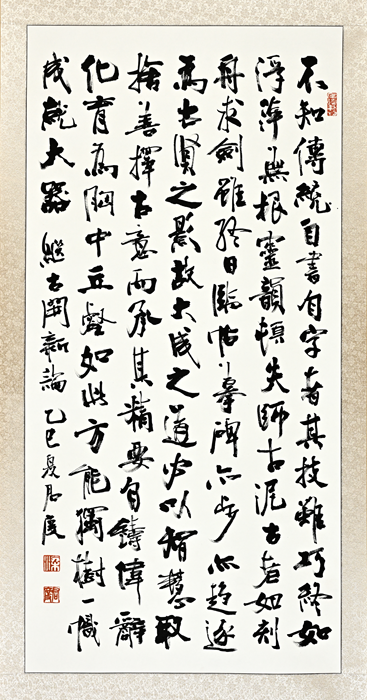
梁君度先生 作品:《繼古開新論》
釋文 : 不知傳統，自書自字者，其技雖巧，終如浮萍無根，靈韻頓失，師古泥古者，如刻舟求劍，雖終日臨帖摹碑，亦步亦趨，逐為古賢之影，故大成之道，必以智慧取捨，善擇古意而承其精要，自鑄偉辭化育為胸中丘壑，如此方能獨樹一幟，成就大器。
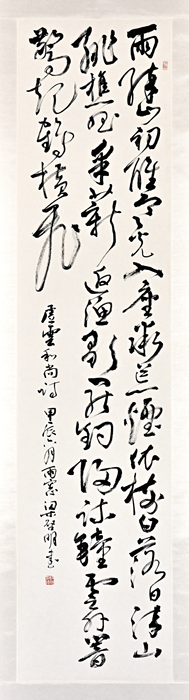
梁啟明先生 作品: 虛雲和尚 五律詩 《鼓山雨後晚眺》
釋文 : 雨醉山初醒，寒光入座微。荒煙依樹白，落日染山緋。樵唱采薪返，漁歌罷釣歸。疏鐘雲外響，驚起鶴橫飛。
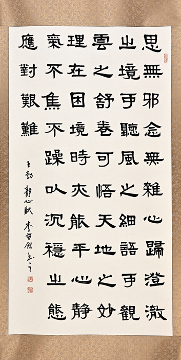
李堃銘先生 作品:《靜心賦》
釋文 : 思無邪，念無雜，心歸澄澈之境。可聽風之細語，可觀雲之舒卷，可悟天地之妙理。在困境時亦能平心靜氣，不焦不躁，以沉穩之態應對艱難。
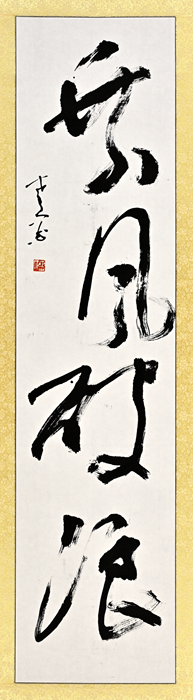
麥錦超先生 作品:《乘風破浪》
釋文 : 乘風破浪
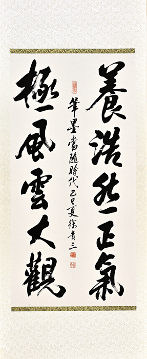
徐貴三先生 作品: 對聯
釋文 : 養浩然正氣 極風雲大觀
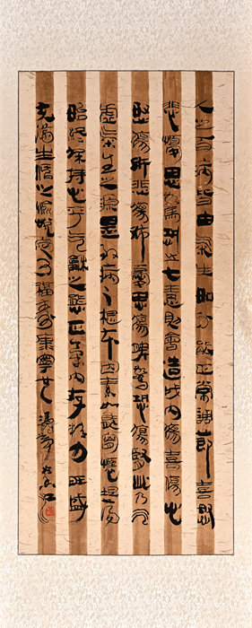
馮鶴亭先生 作品:福壽康寧
釋文 : 人之百病皆由氣生，如不能正常調節，喜、怒、悲、憂、思、驚、恐之七情，則會造成內傷，喜傷心、怒傷肝、悲傷肺、憂思傷脾、驚恐傷腎、此乃氣虛氣生之源，是致病之根本因素，如能胸懷坦蕩，始終保持心平氣和之態，正氣內存，精力旺盛，充滿生活之愉悅，定可福壽康寧也。
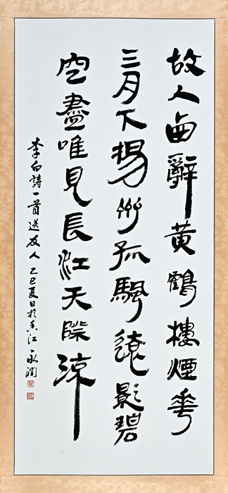
葉永潤先生 作品: 李白《黄鶴樓送孟浩然之廣陵》
釋文 : 故人西辭黃鶴樓，煙花三月下揚州。孤帆遠影碧空盡，唯見長江天際流。
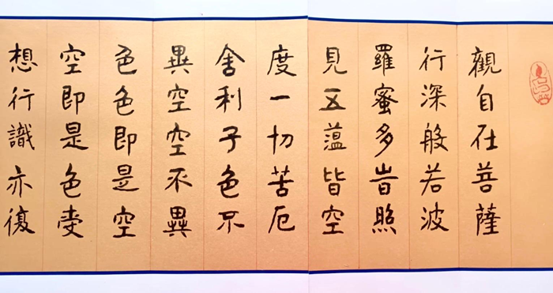
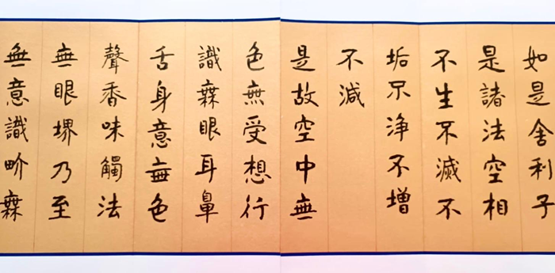
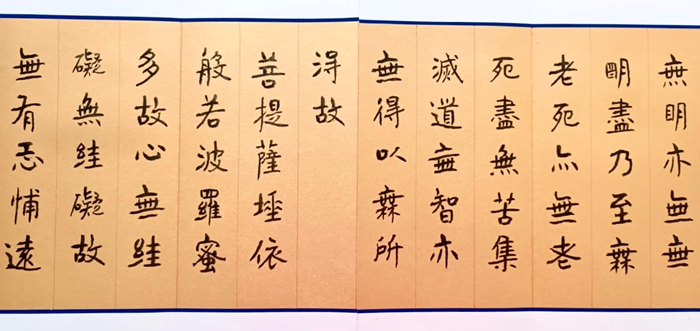
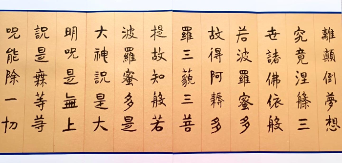
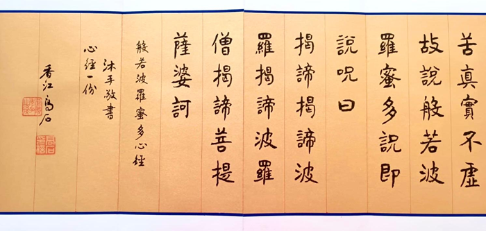
吳高石先生 作品:《心經》
釋文：觀自在菩薩，行深般若波羅蜜多時，照見五蘊皆空，度一切苦厄。舍利子！色不異空，空不異色；色即是空，空即是色，受想行識亦復如是。舍利子！是諸法空相，不生不滅，不垢不淨，不增不減。是故，空中無色，無受想行識；無眼耳鼻舌身意；無色聲香味觸法；無眼界，乃至無意識界；無無明，亦無無明盡，乃至無老死，亦無老死盡；無苦集滅道；無智亦無得。以無所得故，菩提薩埵。依般若波羅蜜多故，心無罣礙；無罣礙故，無有恐怖，遠離顛倒夢想，究竟涅槃。三世諸佛，依般若波羅蜜多故，得阿耨多羅三藐三菩提。故知：般若波羅蜜多是大神咒，是大明咒，是無上咒，是無等等咒，能除一切苦，真實不虛。故說般若波羅蜜多咒，即說咒曰：揭諦揭諦，波羅揭諦，波羅僧揭諦，菩提薩婆訶。